CODING AGENTS AS PIXEL WORLD MODELS
traex/DeepSeek-V4.1-Flash · mechanics_0008
点击播放 · 原生 RGB 像素
逐轮保存的候选
回放视频、检查图与代码变化。
每份候选均可单独播放。实际图片检查记录在下方工具轨迹中。
候选 01播放与检查图
点击播放 · 原生 RGB 像素

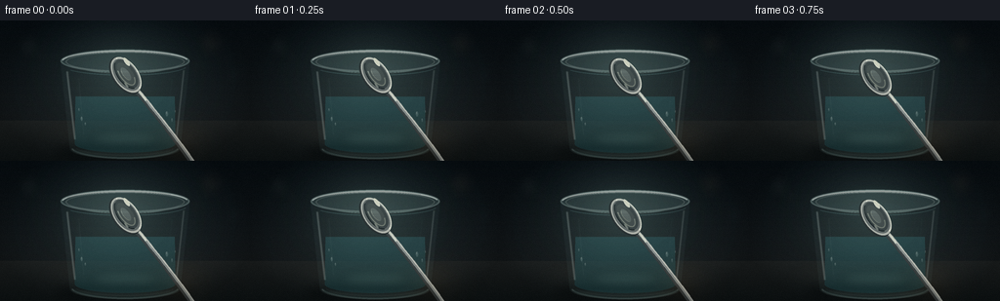
展开代码变化
--- 上一保存版本
+++ 本次保存版本
@@ -0,0 +1,528 @@
+from __future__ import annotations
+
+import math
+from pathlib import Path
+
+import numpy as np
+from PIL import Image, ImageDraw, ImageFilter
+
+import artifact_io
+
+
+OUT_W, OUT_H = 256, 144
+SCALE = 4
+W, H = OUT_W * SCALE, OUT_H * SCALE
+FRAMES = 20
+FPS = 4.0
+CASE_DIR = Path(__file__).resolve().parent
+
+
+def rgba_layer() -> Image.Image:
+ return Image.new("RGBA", (W, H), (0, 0, 0, 0))
+
+
+def smoothstep(x: float) -> float:
+ x = max(0.0, min(1.0, x))
+ return x * x * (3.0 - 2.0 * x)
+
+
+def lerp(a, b, t):
+ return tuple(int(round(x + (y - x) * t)) for x, y in zip(a, b))
+
+
+def vertical_gradient(top, bottom, height=H, width=W) -> Image.Image:
+ ramp = np.linspace(0.0, 1.0, height, dtype=np.float32)[:, None]
+ top_arr = np.array(top, dtype=np.float32)
+ bottom_arr = np.array(bottom, dtype=np.float32)
+ rows = top_arr[None, :] * (1.0 - ramp) + bottom_arr[None, :] * ramp
+ arr = np.repeat(rows[:, None, :], width, axis=1)
+ return Image.fromarray(np.clip(arr, 0, 255).astype(np.uint8), "RGB")
+
+
+def radial_glow(center, radius, color, strength=1.0) -> Image.Image:
+ cx, cy = center
+ yy, xx = np.mgrid[0:H, 0:W]
+ dist = np.sqrt((xx - cx) ** 2 + ((yy - cy) * 1.2) ** 2)
+ falloff = np.clip(1.0 - dist / radius, 0.0, 1.0) ** 2.2
+ alpha = np.clip(falloff * strength * 255, 0, 255).astype(np.uint8)
+ rgba = np.zeros((H, W, 4), dtype=np.uint8)
+ rgba[:, :, :3] = np.array(color, dtype=np.uint8)
+ rgba[:, :, 3] = alpha
+ return Image.fromarray(rgba, "RGBA")
+
+
+def rounded_ellipse(draw, box, fill):
+ draw.ellipse(box, fill=fill)
+
+
+def background() -> Image.Image:
+ base = vertical_gradient((10, 18, 23), (31, 35, 36))
+ base = Image.alpha_composite(base.convert("RGBA"), radial_glow((510, 248), 560, (77, 105, 101), 0.32)).convert("RGB")
+
+ # Soft out-of-focus lights give the dark background depth without competing
+ # with the glass.
+ bokeh = rgba_layer()
+ bd = ImageDraw.Draw(bokeh)
+ for cx, cy, r, color, alpha in [
+ (117, 104, 39, (148, 174, 162), 21),
+ (184, 157, 20, (168, 181, 158), 18),
+ (862, 92, 48, (164, 136, 104), 19),
+ (801, 188, 23, (169, 151, 117), 17),
+ (708, 58, 15, (167, 177, 157), 13),
+ (956, 222, 34, (89, 133, 130), 12),
+ ]:
+ bd.ellipse((cx - r, cy - r, cx + r, cy + r), fill=(*color, alpha))
+ bokeh = bokeh.filter(ImageFilter.GaussianBlur(23))
+ base = Image.alpha_composite(base.convert("RGBA"), bokeh)
+
+ # A quiet slate tabletop with a warm reflected highlight.
+ table = vertical_gradient((35, 39, 39), (18, 24, 25), height=H - 410, width=W)
+ table_mask = Image.new("L", (W, H), 0)
+ ImageDraw.Draw(table_mask).rectangle((0, 410, W, H), fill=255)
+ table_mask = table_mask.filter(ImageFilter.GaussianBlur(2))
+ table_full = Image.new("RGB", (W, H), (18, 24, 25))
+ table_full.paste(table, (0, 410))
+ base = Image.composite(table_full, base, table_mask)
+
+ sheen = rgba_layer()
+ sd = ImageDraw.Draw(sheen)
+ sd.ellipse((150, 410, 880, 522), fill=(118, 102, 79, 22))
+ sd.rectangle((0, 474, W, 492), fill=(128, 133, 121, 9))
+ sheen = sheen.filter(ImageFilter.GaussianBlur(31))
+ base = Image.alpha_composite(base.convert("RGBA"), sheen)
+
+ # Faint grain avoids clean digital banding in the large gradients.
+ base = base.convert("RGB")
+ rng = np.random.default_rng(941)
+ grain = rng.normal(0.0, 1.8, (H, W, 1)).repeat(3, axis=2)
+ arr = np.asarray(base).astype(np.float32) + grain
+ return Image.fromarray(np.clip(arr, 0, 255).astype(np.uint8), "RGB")
+
+
+def glass_geometry():
+ top_y, base_y = 166, 526
+ outer_left_top, outer_right_top = 247, 777
+ outer_left_base, outer_right_base = 286, 738
+ inner_left_top, inner_right_top = 271, 753
+ inner_left_base, inner_right_base = 306, 718
+ return {
+ "top_y": top_y,
+ "base_y": base_y,
+ "outer_left_top": outer_left_top,
+ "outer_right_top": outer_right_top,
+ "outer_left_base": outer_left_base,
+ "outer_right_base": outer_right_base,
+ "inner_left_top": inner_left_top,
+ "inner_right_top": inner_right_top,
+ "inner_left_base": inner_left_base,
+ "inner_right_base": inner_right_base,
+ }
+
+
+def glass_mask(g):
+ mask = Image.new("L", (W, H), 0)
+ d = ImageDraw.Draw(mask)
+ d.polygon(
+ [
+ (g["outer_left_top"], g["top_y"]),
+ (g["outer_right_top"], g["top_y"]),
+ (g["outer_right_base"], g["base_y"]),
+ (g["outer_left_base"], g["base_y"]),
+ ],
+ fill=255,
+ )
+ d.ellipse(
+ (g["outer_left_top"], g["top_y"] - 48, g["outer_right_top"], g["top_y"] + 48),
+ fill=255,
+ )
+ d.ellipse(
+ (g["outer_left_base"], g["base_y"] - 42, g["outer_right_base"], g["base_y"] + 42),
+ fill=255,
+ )
+ return mask
+
+
+def inner_glass_mask(g):
+ mask = Image.new("L", (W, H), 0)
+ d = ImageDraw.Draw(mask)
+ d.polygon(
+ [
+ (g["inner_left_top"], g["top_y"] + 7),
+ (g["inner_right_top"], g["top_y"] + 7),
+ (g["inner_right_base"], g["base_y"] - 18),
+ (g["inner_left_base"], g["base_y"] - 18),
+ ],
+ fill=255,
+ )
+ d.ellipse(
+ (g["inner_left_top"], g["top_y"] - 37, g["inner_right_top"], g["top_y"] + 52),
+ fill=255,
+ )
+ d.ellipse(
+ (g["inner_left_base"], g["base_y"] - 57, g["inner_right_base"], g["base_y"] + 16),
+ fill=255,
+ )
+ return mask
+
+
+def water_mask(g):
+ water_y = 311
+ mask = Image.new("L", (W, H), 0)
+ d = ImageDraw.Draw(mask)
+ d.polygon(
+ [
+ (309, water_y),
+ (715, water_y),
+ (g["inner_right_base"], g["base_y"] - 18),
+ (g["inner_left_base"], g["base_y"] - 18),
+ ],
+ fill=255,
+ )
+ d.ellipse((309, water_y - 33, 715, water_y + 33), fill=255)
+ d.ellipse(
+ (g["inner_left_base"], g["base_y"] - 57, g["inner_right_base"], g["base_y"] + 16),
+ fill=255,
+ )
+ mask = Image.composite(mask, Image.new("L", (W, H), 0), inner_glass_mask(g))
+ return mask
+
+
+def draw_glass(base: Image.Image) -> Image.Image:
+ g = glass_geometry()
+ body = glass_mask(g)
+ inner = inner_glass_mask(g)
+
+ # Cast shadow and a dim, vertically stretched reflection anchor the glass.
+ shadow = rgba_layer()
+ sd = ImageDraw.Draw(shadow)
+ sd.ellipse((230, 512, 794, 571), fill=(2, 7, 8, 120))
+ sd.ellipse((348, 538, 680, 572), fill=(1, 5, 6, 85))
+ shadow = shadow.filter(ImageFilter.GaussianBlur(18))
+ base = Image.alpha_composite(base.convert("RGBA"), shadow)
+
+ reflection = rgba_layer()
+ rd = ImageDraw.Draw(reflection)
+ rd.polygon(
+ [
+ (286, 528),
+ (738, 528),
+ (712, 572),
+ (316, 572),
+ ],
+ fill=(125, 157, 150, 34),
+ )
+ reflection = reflection.filter(ImageFilter.GaussianBlur(10))
+ reflection.putalpha(Image.composite(reflection.getchannel("A"), Image.new("L", (W, H), 0), body))
+ base = Image.alpha_composite(base.convert("RGBA"), reflection)
+
+ # Glass body: pale blue-green transmission and darker refractive edges.
+ tint = Image.new("RGBA", (W, H), (119, 156, 153, 0))
+ tint_arr = np.zeros((H, W, 4), dtype=np.uint8)
+ yy = np.linspace(0, 1, H, dtype=np.float32)[:, None]
+ xx = np.linspace(0, 1, W, dtype=np.float32)[None, :]
+ edge = np.clip((np.abs(xx - 0.5) - 0.22) / 0.28, 0, 1)
+ alpha = 13 + 19 * edge + 10 * np.clip((yy - 0.25) / 0.75, 0, 1)
+ tint_arr[:, :, 0] = 105
+ tint_arr[:, :, 1] = 145
+ tint_arr[:, :, 2] = 143
+ tint_arr[:, :, 3] = np.clip(alpha, 0, 50).astype(np.uint8)
+ tint = Image.fromarray(tint_arr, "RGBA")
+ tint.putalpha(Image.composite(tint.getchannel("A"), Image.new("L", (W, H), 0), body))
+ base = Image.alpha_composite(base.convert("RGBA"), tint)
+
+ # Water volume, with a slightly denser blue base and bright caustic pool.
+ wm = water_mask(g)
+ wgrad = vertical_gradient((49, 94, 98), (28, 69, 73), height=H - 311, width=W)
+ wfull = Image.new("RGB", (W, H), (28, 69, 73))
+ wfull.paste(wgrad, (0, 311))
+ water_rgba = wfull.convert("RGBA")
+ walpha = Image.new("L", (W, H), 0)
+ ImageDraw.Draw(walpha).rectangle((0, 312, W, H), fill=126)
+ water_rgba.putalpha(Image.composite(walpha, Image.new("L", (W, H), 0), wm))
+ base = Image.alpha_composite(base.convert("RGBA"), water_rgba)
+
+ caustic = rgba_layer()
+ cd = ImageDraw.Draw(caustic)
+ cd.ellipse((370, 455, 654, 518), fill=(147, 208, 192, 31))
+ cd.ellipse((397, 472, 620, 514), fill=(195, 232, 211, 22))
+ caustic = caustic.filter(ImageFilter.GaussianBlur(21))
+ caustic.putalpha(Image.composite(caustic.getchannel("A"), Image.new("L", (W, H), 0), wm))
+ base = Image.alpha_composite(base.convert("RGBA"), caustic)
+
+ # Vertical side highlights read as thick, polished glass.
+ highlights = rgba_layer()
+ hd = ImageDraw.Draw(highlights)
+ hd.line([(274, 207), (306, 489)], fill=(214, 235, 229, 67), width=10)
+ hd.line([(279, 217), (309, 476)], fill=(241, 249, 243, 47), width=3)
+ hd.line([(752, 203), (722, 484)], fill=(210, 230, 225, 53), width=8)
+ hd.line([(749, 215), (720, 465)], fill=(246, 248, 237, 32), width=2)
+ hd.line([(322, 235), (342, 470)], fill=(188, 219, 214, 16), width=5)
+ hd.line([(702, 239), (684, 458)], fill=(168, 207, 203, 13), width=4)
+ highlights = highlights.filter(ImageFilter.GaussianBlur(2.2))
+ base = Image.alpha_composite(base.convert("RGBA"), highlights)
+
+ # Thick elliptical rim: a glassy top band with asymmetric white reflections.
+ rim = rgba_layer()
+ rd = ImageDraw.Draw(rim)
+ rd.ellipse(
+ (g["outer_left_top"], g["top_y"] - 48, g["outer_right_top"], g["top_y"] + 48),
+ fill=(124, 161, 158, 42),
+ outline=(185, 218, 211, 88),
+ width=8,
+ )
+ rd.ellipse(
+ (g["inner_left_top"] - 2, g["top_y"] - 37, g["inner_right_top"] + 2, g["top_y"] + 43),
+ outline=(215, 237, 228, 78),
+ width=4,
+ )
+ rd.arc(
+ (250, 122, 774, 215),
+ 190,
+ 347,
+ fill=(241, 249, 242, 184),
+ width=7,
+ )
+ rd.arc(
+ (252, 125, 772, 214),
+ 204,
+ 316,
+ fill=(255, 255, 248, 107),
+ width=2,
+ )
+ rd.arc(
+ (257, 145, 767, 226),
+ 12,
+ 152,
+ fill=(115, 164, 165, 72),
+ width=5,
+ )
+ rd.arc(
+ (312, 151, 712, 218),
+ 24,
+ 156,
+ fill=(211, 232, 224, 68),
+ width=3,
+ )
+ rim = rim.filter(ImageFilter.GaussianBlur(1.0))
+ base = Image.alpha_composite(base.convert("RGBA"), rim)
+
+ # Base ring and glass thickness.
+ foot = rgba_layer()
+ fd = ImageDraw.Draw(foot)
+ fd.arc(
+ (286, 468, 738, 568),
+ 12,
+ 168,
+ fill=(179, 207, 199, 76),
+ width=10,
+ )
+ fd.arc(
+ (305, 480, 719, 554),
+ 15,
+ 165,
+ fill=(234, 240, 224, 56),
+ width=3,
+ )
+ fd.arc(
+ (291, 477, 733, 562),
+ 17,
+ 160,
+ fill=(74, 120, 120, 49),
+ width=4,
+ )
+ foot = foot.filter(ImageFilter.GaussianBlur(2.0))
+ base = Image.alpha_composite(base.convert("RGBA"), foot)
+
+ # A handful of condensation beads add scale without cluttering the subject.
+ drops = rgba_layer()
+ dd = ImageDraw.Draw(drops)
+ for x, y, rx, ry, a in [
+ (334, 403, 4, 9, 50),
+ (349, 424, 3, 7, 43),
+ (683, 383, 5, 11, 45),
+ (704, 408, 3, 8, 38),
+ (717, 373, 2, 6, 35),
+ (323, 366, 3, 7, 31),
+ ]:
+ dd.ellipse((x - rx, y - ry, x + rx, y + ry), fill=(201, 225, 219, a))
+ dd.ellipse((x - rx + 1, y - ry + 1, x, y), fill=(245, 248, 236, a + 25))
+ drops = drops.filter(ImageFilter.GaussianBlur(0.65))
+ base = Image.alpha_composite(base.convert("RGBA"), drops)
+
+ return base.convert("RGB")
+
+
+def spoon_pose(index: int) -> tuple[float, float]:
+ """Return bowl center and a soft sink value in high-resolution pixels."""
+ s = smoothstep(index / 15.0)
+ y = 220.0 + 96.0 * s
+ # Contact is deliberately late; after contact the spoon settles only a
+ # little, preserving the prompt's gentle action.
+ sink = max(0.0, index - 11) / 8.0
+ return y + 4.0 * sink, sink
+
+
+def draw_spoon(base: Image.Image, index: int) -> Image.Image:
+ y, sink = spoon_pose(index)
+ contact_y = 315.0
+ above = max(0.0, contact_y - y)
+ ripple_age = max(0.0, (index - 11) / FPS)
+ touching = ripple_age > 0
+
+ # Soft reflected silver smear on the water, strongest at contact.
+ if above < 76:
+ strength = smoothstep(1.0 - above / 76.0)
+ refl = rgba_layer()
+ rd = ImageDraw.Draw(refl)
+ rx0, rx1 = 476, 560
+ ry0, ry1 = int(contact_y - 2), int(contact_y + 100 * strength + 30)
+ rd.rounded_rectangle(
+ (rx0, ry0, rx1, ry1),
+ radius=27,
+ fill=(181, 203, 198, int(38 * strength)),
+ )
+ rd.line((511, ry0, 508, ry1), fill=(232, 238, 222, int(58 * strength)), width=6)
+ refl = refl.filter(ImageFilter.GaussianBlur(12))
+ refl = refl.filter(ImageFilter.GaussianBlur(4))
+ base = Image.alpha_composite(base.convert("RGBA"), refl)
+
+ # Expanding, compressed elliptical rings on the water surface.
+ if touching:
+ rings = rgba_layer()
+ rdraw = ImageDraw.Draw(rings)
+ for phase in (0.0, 0.36, 0.68):
+ age = ripple_age - phase
+ if age < 0:
+ continue
+ radius = 24 + 104 * age
+ alpha = int(74 * math.exp(-1.15 * age))
+ if alpha < 3:
+ continue
+ box = (512 - radius, 314 - radius * 0.17, 512 + radius, 314 + radius * 0.17)
+ rdraw.arc(box, 4, 356, fill=(218, 241, 233, alpha), width=max(2, int(5 - age)))
+ inner = radius - 8
+ if inner > 20:
+ box2 = (512 - inner, 314 - inner * 0.17, 512 + inner, 314 + inner * 0.17)
+ rdraw.arc(box2, 8, 352, fill=(109, 174, 174, alpha // 2), width=2)
+ rings = rings.filter(ImageFilter.GaussianBlur(1.3))
+ base = Image.alpha_composite(base.convert("RGBA"), rings)
+
+ # Spoon is authored horizontally, then rotated as one coherent metal object.
+ # The bowl sits exactly at the center of this square layer, so rotation
+ # pivots around the subject rather than shifting it across the scene.
+ local = Image.new("RGBA", (1000, 1000), (0, 0, 0, 0))
+ ld = ImageDraw.Draw(local)
+ ox, oy = 500, 500
+
+ # Handle: a slim, slightly curved shaft with a dark underside and a crisp
+ # white reflection running along its top edge.
+ points = []
+ for k in range(29):
+ u = k / 28.0
+ px = ox + 88 + 494 * u
+ py = oy - 10 * math.sin(u * math.pi * 0.85) - 2 * u
+ points.append((px, py))
+ ld.line(points, fill=(53, 59, 61, 255), width=24, joint="curve")
+ ld.line([(p[0], p[1] - 5) for p in points], fill=(139, 146, 144, 255), width=14, joint="curve")
+ ld.line([(p[0], p[1] - 8) for p in points], fill=(228, 229, 215, 225), width=4, joint="curve")
+ ld.line([(p[0], p[1] + 6) for p in points], fill=(79, 89, 91, 160), width=3, joint="curve")
+ # Broad polished glint near the neck.
+ ld.line([(ox + 83, oy - 6), (ox + 138, oy - 6)], fill=(250, 248, 229, 200), width=7)
+
+ # Bowl silhouette, underside, and the bright lip.
+ bowl_box = (ox - 82, oy - 48, ox + 91, oy + 54)
+ ld.ellipse(bowl_box, fill=(48, 55, 57, 255), outline=(35, 42, 44, 255), width=4)
+ ld.ellipse((ox - 78, oy - 51, ox + 88, oy + 46), fill=(178, 181, 173, 255))
+ ld.ellipse((ox - 70, oy - 47, ox + 79, oy + 41), fill=(94, 101, 101, 255))
+ ld.ellipse((ox - 65, oy - 41, ox + 69, oy + 31), fill=(54, 63, 65, 255))
+ ld.arc((ox - 76, oy - 51, ox + 87, oy + 47), 188, 346, fill=(250, 249, 231, 228), width=6)
+ ld.arc((ox - 74, oy - 48, ox + 83, oy + 42), 194, 338, fill=(255, 255, 241, 130), width=2)
+ ld.arc((ox - 66, oy - 40, ox + 72, oy + 32), 11, 163, fill=(20, 27, 30, 185), width=5)
+ # Concave interior: warm reflected light at lower right, cool shadow above.
+ ld.ellipse((ox - 52, oy - 30, ox + 57, oy + 22), fill=(64, 73, 73, 255))
+ ld.arc((ox - 52, oy - 30, ox + 57, oy + 22), 305, 125, fill=(190, 190, 172, 122), width=5)
+ ld.ellipse((ox - 30, oy - 17, ox + 33, oy + 10), fill=(96, 105, 102, 205))
+ ld.arc((ox - 28, oy - 15, ox + 31, oy + 9), 12, 165, fill=(218, 213, 190, 92), width=3)
+ # Small, hard specular patches make the metal legible at output size.
+ ld.ellipse((ox - 57, oy - 43, ox - 17, oy - 28), fill=(255, 252, 229, 207))
+ ld.ellipse((ox + 26, oy + 18, ox + 52, oy + 25), fill=(238, 235, 216, 94))
+
+ # Apply a small rotation; the handle disappears naturally above the frame.
+ angle = -54.0
+ rotated = local.rotate(angle, resample=Image.Resampling.BICUBIC, expand=False)
+ anchor_x, anchor_y = 512, int(round(y))
+
+ # Contact shadow under the bowl when it is very near the water.
+ if above < 90:
+ shadow = rgba_layer()
+ sd = ImageDraw.Draw(shadow)
+ spread = 46 + above * 0.35
+ alpha = int(92 * (1.0 - above / 90.0))
+ sd.ellipse(
+ (anchor_x - spread, int(contact_y - 10), anchor_x + spread, int(contact_y + 13)),
+ fill=(4, 21, 23, alpha),
+ )
+ shadow = shadow.filter(ImageFilter.GaussianBlur(10))
+ base = Image.alpha_composite(base.convert("RGBA"), shadow)
+
+ base_rgba = base.convert("RGBA")
+ base_rgba.paste(rotated, (anchor_x - ox, anchor_y - oy), rotated)
+ base = base_rgba
+
+ # A tiny dark contact patch and a crescent of water displaced at the bowl.
+ if touching:
+ water_contact = rgba_layer()
+ wd = ImageDraw.Draw(water_contact)
+ wd.ellipse((anchor_x - 55, int(contact_y - 8), anchor_x + 55, int(contact_y + 13)), fill=(25, 64, 67, 78))
+ wd.arc((anchor_x - 59, int(contact_y - 14), anchor_x + 60, int(contact_y + 16)), 10, 170, fill=(199, 233, 221, 104), width=3)
+ water_contact = water_contact.filter(ImageFilter.GaussianBlur(1.5))
+ base = Image.alpha_composite(base.convert("RGBA"), water_contact)
+
+ return base.convert("RGB")
+
+
+def add_global_lighting(image: Image.Image) -> Image.Image:
+ rgba = image.convert("RGBA")
+ # Very subtle cool rim haze at the top and warm reflected light on table.
+ haze = radial_glow((485, 175), 460, (130, 160, 151), 0.12)
+ rgba = Image.alpha_composite(rgba, haze)
+ warm = radial_glow((737, 514), 250, (178, 132, 81), 0.10)
+ rgba = Image.alpha_composite(rgba, warm)
+
+ # Optical vignette.
+ yy, xx = np.mgrid[0:H, 0:W]
+ nx = (xx - W * 0.5) / (W * 0.5)
+ ny = (yy - H * 0.48) / (H * 0.58)
+ vig = np.clip(1.0 - 0.28 * (nx * nx + ny * ny) ** 1.35, 0.68, 1.0)
+ arr = np.asarray(rgba.convert("RGB")).astype(np.float32) * vig[:, :, None]
+ return Image.fromarray(np.clip(arr, 0, 255).astype(np.uint8), "RGB")
+
+
+def render_frame(index: int) -> np.ndarray:
+ image = background()
+ image = draw_glass(image)
+ image = draw_spoon(image, index)
+ image = add_global_lighting(image)
+
+ # A slow, almost imperceptible push-in helps the still-life feel alive.
+ zoom = 1.0 + 0.012 * (index / (FRAMES - 1))
+ crop_w, crop_h = int(W / zoom), int(H / zoom)
+ left = (W - crop_w) // 2
+ top = int((H - crop_h) * 0.52)
+ image = image.crop((left, top, left + crop_w, top + crop_h)).resize((W, H), Image.Resampling.LANCZOS)
+
+ image = image.resize((OUT_W, OUT_H), Image.Resampling.LANCZOS)
+ arr = np.asarray(image).astype(np.float32)
+ rng = np.random.default_rng(1400 + index)
+ arr += rng.normal(0.0, 0.75, (OUT_H, OUT_W, 1)).repeat(3, axis=2)
+ return np.clip(arr, 0, 255).astype(np.uint8)
+
+
+def main() -> None:
+ frames = np.stack([render_frame(i) for i in range(FRAMES)])
+ artifact_io.save(frames, CASE_DIR)
+ print(f"wrote {FRAMES} frames to {CASE_DIR}")
+
+
+if __name__ == "__main__":
+ main()
候选 02播放与检查图
点击播放 · 原生 RGB 像素

展开代码变化
--- 上一保存版本
+++ 本次保存版本
@@ -355,7 +355,7 @@
def spoon_pose(index: int) -> tuple[float, float]:
"""Return bowl center and a soft sink value in high-resolution pixels."""
s = smoothstep(index / 15.0)
- y = 220.0 + 96.0 * s
+ y = 146.0 + 175.0 * s
# Contact is deliberately late; after contact the spoon settles only a
# little, preserving the prompt's gentle action.
sink = max(0.0, index - 11) / 8.0
@@ -414,41 +414,42 @@
ld = ImageDraw.Draw(local)
ox, oy = 500, 500
- # Handle: a slim, slightly curved shaft with a dark underside and a crisp
- # white reflection running along its top edge.
+ # Handle: a slim, gently curved shaft with a dark underside and a crisp
+ # white reflection running along its top edge. It extends beyond the frame
+ # so the spoon reads as being lowered from off-camera.
points = []
for k in range(29):
u = k / 28.0
- px = ox + 88 + 494 * u
- py = oy - 10 * math.sin(u * math.pi * 0.85) - 2 * u
+ px = ox + 104 + 706 * u
+ py = oy - 13 * math.sin(u * math.pi * 0.85) - 3 * u
points.append((px, py))
- ld.line(points, fill=(53, 59, 61, 255), width=24, joint="curve")
- ld.line([(p[0], p[1] - 5) for p in points], fill=(139, 146, 144, 255), width=14, joint="curve")
- ld.line([(p[0], p[1] - 8) for p in points], fill=(228, 229, 215, 225), width=4, joint="curve")
- ld.line([(p[0], p[1] + 6) for p in points], fill=(79, 89, 91, 160), width=3, joint="curve")
+ ld.line(points, fill=(37, 44, 47, 255), width=34, joint="curve")
+ ld.line([(p[0], p[1] - 7) for p in points], fill=(161, 168, 162, 255), width=21, joint="curve")
+ ld.line([(p[0], p[1] - 11) for p in points], fill=(242, 240, 219, 241), width=5, joint="curve")
+ ld.line([(p[0], p[1] + 9) for p in points], fill=(72, 83, 86, 176), width=4, joint="curve")
# Broad polished glint near the neck.
- ld.line([(ox + 83, oy - 6), (ox + 138, oy - 6)], fill=(250, 248, 229, 200), width=7)
+ ld.line([(ox + 96, oy - 9), (ox + 171, oy - 9)], fill=(252, 250, 230, 222), width=9)
# Bowl silhouette, underside, and the bright lip.
- bowl_box = (ox - 82, oy - 48, ox + 91, oy + 54)
- ld.ellipse(bowl_box, fill=(48, 55, 57, 255), outline=(35, 42, 44, 255), width=4)
- ld.ellipse((ox - 78, oy - 51, ox + 88, oy + 46), fill=(178, 181, 173, 255))
- ld.ellipse((ox - 70, oy - 47, ox + 79, oy + 41), fill=(94, 101, 101, 255))
- ld.ellipse((ox - 65, oy - 41, ox + 69, oy + 31), fill=(54, 63, 65, 255))
- ld.arc((ox - 76, oy - 51, ox + 87, oy + 47), 188, 346, fill=(250, 249, 231, 228), width=6)
- ld.arc((ox - 74, oy - 48, ox + 83, oy + 42), 194, 338, fill=(255, 255, 241, 130), width=2)
- ld.arc((ox - 66, oy - 40, ox + 72, oy + 32), 11, 163, fill=(20, 27, 30, 185), width=5)
+ bowl_box = (ox - 126, oy - 73, ox + 139, oy + 82)
+ ld.ellipse(bowl_box, fill=(26, 33, 36, 255), outline=(18, 25, 28, 255), width=5)
+ ld.ellipse((ox - 120, oy - 77, ox + 134, oy + 70), fill=(188, 191, 179, 255))
+ ld.ellipse((ox - 109, oy - 70, ox + 121, oy + 61), fill=(92, 100, 100, 255))
+ ld.ellipse((ox - 101, oy - 62, ox + 108, oy + 47), fill=(43, 53, 56, 255))
+ ld.arc((ox - 117, oy - 77, ox + 132, oy + 71), 188, 346, fill=(255, 252, 230, 245), width=9)
+ ld.arc((ox - 112, oy - 72, ox + 126, oy + 64), 194, 338, fill=(255, 255, 242, 156), width=3)
+ ld.arc((ox - 102, oy - 60, ox + 110, oy + 49), 11, 163, fill=(13, 21, 24, 219), width=7)
# Concave interior: warm reflected light at lower right, cool shadow above.
- ld.ellipse((ox - 52, oy - 30, ox + 57, oy + 22), fill=(64, 73, 73, 255))
- ld.arc((ox - 52, oy - 30, ox + 57, oy + 22), 305, 125, fill=(190, 190, 172, 122), width=5)
- ld.ellipse((ox - 30, oy - 17, ox + 33, oy + 10), fill=(96, 105, 102, 205))
- ld.arc((ox - 28, oy - 15, ox + 31, oy + 9), 12, 165, fill=(218, 213, 190, 92), width=3)
+ ld.ellipse((ox - 80, oy - 44, ox + 88, oy + 31), fill=(57, 68, 69, 255))
+ ld.arc((ox - 80, oy - 44, ox + 88, oy + 31), 305, 125, fill=(202, 199, 177, 135), width=7)
+ ld.ellipse((ox - 48, oy - 25, ox + 53, oy + 13), fill=(91, 100, 97, 218))
+ ld.arc((ox - 46, oy - 23, ox + 50, oy + 12), 12, 165, fill=(231, 224, 198, 112), width=4)
# Small, hard specular patches make the metal legible at output size.
- ld.ellipse((ox - 57, oy - 43, ox - 17, oy - 28), fill=(255, 252, 229, 207))
- ld.ellipse((ox + 26, oy + 18, ox + 52, oy + 25), fill=(238, 235, 216, 94))
+ ld.ellipse((ox - 87, oy - 64, ox - 21, oy - 43), fill=(255, 252, 230, 227))
+ ld.ellipse((ox + 39, oy + 25, ox + 79, oy + 35), fill=(247, 243, 221, 114))
# Apply a small rotation; the handle disappears naturally above the frame.
- angle = -54.0
+ angle = -57.0
rotated = local.rotate(angle, resample=Image.Resampling.BICUBIC, expand=False)
anchor_x, anchor_y = 512, int(round(y))
候选 03播放与检查图
点击播放 · 原生 RGB 像素

展开代码变化
代码未变化；重新保存了产物。
候选 04播放与检查图
点击播放 · 原生 RGB 像素
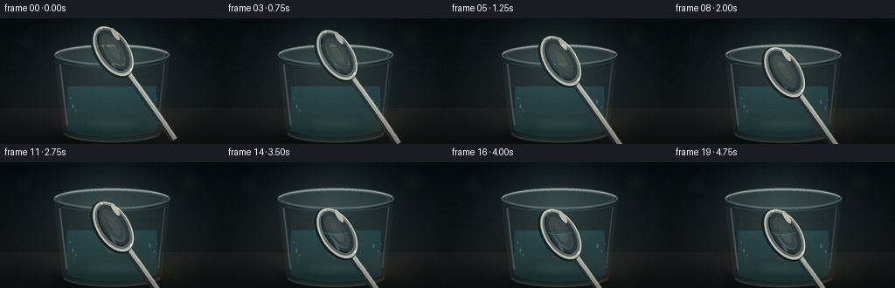
展开代码变化
--- 上一保存版本
+++ 本次保存版本
@@ -466,9 +466,9 @@
shadow = shadow.filter(ImageFilter.GaussianBlur(10))
base = Image.alpha_composite(base.convert("RGBA"), shadow)
- base_rgba = base.convert("RGBA")
- base_rgba.paste(rotated, (anchor_x - ox, anchor_y - oy), rotated)
- base = base_rgba
+ overlay = rgba_layer()
+ overlay.paste(rotated, (anchor_x - ox, anchor_y - oy), rotated)
+ base = Image.alpha_composite(base.convert("RGBA"), overlay)
# A tiny dark contact patch and a crescent of water displaced at the bowl.
if touching:
候选 05播放与检查图
点击播放 · 原生 RGB 像素

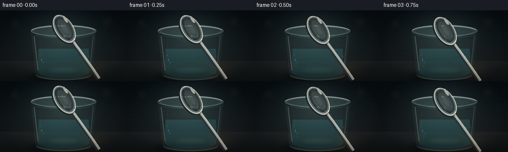
展开代码变化
--- 上一保存版本
+++ 本次保存版本
@@ -360,6 +360,127 @@
# little, preserving the prompt's gentle action.
sink = max(0.0, index - 11) / 8.0
return y + 4.0 * sink, sink
+
+
+def ellipse_mask(cx: float, cy: float, rx: float, ry: float) -> Image.Image:
+ mask = Image.new("L", (1000, 1000), 0)
+ ImageDraw.Draw(mask).ellipse((cx - rx, cy - ry, cx + rx, cy + ry), fill=255)
+ return mask
+
+
+def chrome_fill(mask: Image.Image, cool=True) -> Image.Image:
+ yy, xx = np.mgrid[0:1000, 0:1000].astype(np.float32)
+ nx = (xx - 500.0) / 145.0
+ ny = (yy - 500.0) / 88.0
+ directional = np.clip(0.58 - 0.30 * nx - 0.40 * ny, 0.16, 1.0)
+ sweep = np.clip(1.0 - np.abs(0.72 * nx + 0.30 * ny + 0.05) * 2.2, 0.0, 1.0)
+ lower_glow = np.clip(0.85 - 0.70 * ny + 0.12 * nx, 0.0, 1.0)
+ lum = np.clip(0.40 + 0.48 * directional + 0.18 * sweep + 0.10 * lower_glow, 0.0, 1.0)
+ rgba = np.zeros((1000, 1000, 4), dtype=np.uint8)
+ rgba[:, :, 0] = np.clip(155 + 103 * lum, 0, 255)
+ rgba[:, :, 1] = np.clip(162 + 94 * lum, 0, 255)
+ rgba[:, :, 2] = np.clip(160 + 83 * lum, 0, 255)
+ if cool:
+ rgba[:, :, 2] = np.clip(rgba[:, :, 2].astype(np.int16) + 8, 0, 255)
+ rgba[:, :, 3] = np.asarray(mask, dtype=np.uint8)
+ return Image.fromarray(rgba, "RGBA")
+
+
+def draw_spoon_bowl(local: Image.Image, ox: float, oy: float) -> None:
+ ld = ImageDraw.Draw(local)
+
+ # A narrow neck physically joins the bowl and handle.
+ ld.polygon(
+ [
+ (ox + 74, oy - 35),
+ (ox + 155, oy - 18),
+ (ox + 155, oy + 15),
+ (ox + 71, oy + 34),
+ ],
+ fill=(71, 79, 80, 255),
+ )
+ ld.line((ox + 82, oy - 27, ox + 154, oy - 13), fill=(206, 207, 193, 224), width=7)
+ ld.line((ox + 84, oy + 21, ox + 151, oy + 10), fill=(35, 44, 46, 160), width=6)
+
+ # Soft underside shadow gives the bowl physical thickness.
+ shadow = Image.new("RGBA", (1000, 1000), (0, 0, 0, 0))
+ ImageDraw.Draw(shadow).ellipse(
+ (ox - 128, oy - 61, ox + 142, oy + 92),
+ fill=(11, 17, 19, 138),
+ )
+ shadow = shadow.filter(ImageFilter.GaussianBlur(12))
+ local.alpha_composite(shadow)
+
+ body_mask = ellipse_mask(ox + 3, oy + 2, 132, 78)
+ body = chrome_fill(body_mask)
+ local.alpha_composite(body)
+
+ # Recessed well: dark cool upper side, bright reflected lower lip.
+ well_mask = ellipse_mask(ox - 5, oy - 4, 103, 54)
+ yy, xx = np.mgrid[0:1000, 0:1000].astype(np.float32)
+ u = (xx - (ox - 5)) / 103.0
+ v = (yy - (oy - 4)) / 54.0
+ well_rgba = np.zeros((1000, 1000, 4), dtype=np.uint8)
+ well_rgba[:, :, 0] = np.clip(45 + 44 * np.clip(v + 0.5, 0, 1) - 7 * u, 0, 255).astype(np.uint8)
+ well_rgba[:, :, 1] = np.clip(53 + 55 * np.clip(v + 0.5, 0, 1) - 4 * u, 0, 255).astype(np.uint8)
+ well_rgba[:, :, 2] = np.clip(56 + 53 * np.clip(v + 0.5, 0, 1), 0, 255).astype(np.uint8)
+ well_rgba[:, :, 3] = np.asarray(well_mask, dtype=np.uint8)
+ local.alpha_composite(Image.fromarray(well_rgba, "RGBA"))
+
+ # Broad silver rim and hard speculars establish the curved metal edge.
+ ld.arc(
+ (ox - 126, oy - 76, ox + 135, oy + 82),
+ 187,
+ 350,
+ fill=(255, 252, 232, 249),
+ width=8,
+ )
+ ld.arc(
+ (ox - 119, oy - 70, ox + 129, oy + 73),
+ 198,
+ 337,
+ fill=(255, 255, 245, 164),
+ width=3,
+ )
+ ld.arc(
+ (ox - 99, oy - 57, ox + 96, oy + 53),
+ 192,
+ 345,
+ fill=(232, 232, 214, 204),
+ width=4,
+ )
+ ld.arc(
+ (ox - 121, oy - 66, ox + 129, oy + 73),
+ 11,
+ 164,
+ fill=(40, 49, 51, 208),
+ width=5,
+ )
+ ld.arc(
+ (ox - 96, oy - 49, ox + 92, oy + 45),
+ 16,
+ 157,
+ fill=(144, 145, 132, 140),
+ width=5,
+ )
+ ld.ellipse((ox - 92, oy - 59, ox - 34, oy - 42), fill=(255, 254, 236, 236))
+ ld.ellipse((ox - 51, oy - 55, ox + 6, oy - 46), fill=(244, 244, 224, 162))
+ ld.ellipse((ox + 39, oy + 28, ox + 80, oy + 37), fill=(246, 241, 218, 122))
+ ld.ellipse((ox + 8, oy + 19, ox + 54, oy + 28), fill=(198, 204, 190, 96))
+
+ # A faint reflected window shape in the bowl keeps the metal from looking
+ # uniformly painted.
+ reflection = Image.new("RGBA", (1000, 1000), (0, 0, 0, 0))
+ rdraw = ImageDraw.Draw(reflection)
+ rdraw.rounded_rectangle(
+ (ox - 61, oy - 27, ox - 4, oy + 9),
+ radius=18,
+ fill=(185, 193, 182, 43),
+ )
+ rdraw.line((ox - 46, oy - 19, ox - 46, oy + 2), fill=(224, 223, 204, 60), width=3)
+ reflection = reflection.filter(ImageFilter.GaussianBlur(3))
+ reflection.putalpha(Image.composite(reflection.getchannel("A"), Image.new("L", (1000, 1000), 0), well_mask))
+ local.alpha_composite(reflection)
def draw_spoon(base: Image.Image, index: int) -> Image.Image:
@@ -430,23 +551,7 @@
# Broad polished glint near the neck.
ld.line([(ox + 96, oy - 9), (ox + 171, oy - 9)], fill=(252, 250, 230, 222), width=9)
- # Bowl silhouette, underside, and the bright lip.
- bowl_box = (ox - 126, oy - 73, ox + 139, oy + 82)
- ld.ellipse(bowl_box, fill=(26, 33, 36, 255), outline=(18, 25, 28, 255), width=5)
- ld.ellipse((ox - 120, oy - 77, ox + 134, oy + 70), fill=(188, 191, 179, 255))
- ld.ellipse((ox - 109, oy - 70, ox + 121, oy + 61), fill=(92, 100, 100, 255))
- ld.ellipse((ox - 101, oy - 62, ox + 108, oy + 47), fill=(43, 53, 56, 255))
- ld.arc((ox - 117, oy - 77, ox + 132, oy + 71), 188, 346, fill=(255, 252, 230, 245), width=9)
- ld.arc((ox - 112, oy - 72, ox + 126, oy + 64), 194, 338, fill=(255, 255, 242, 156), width=3)
- ld.arc((ox - 102, oy - 60, ox + 110, oy + 49), 11, 163, fill=(13, 21, 24, 219), width=7)
- # Concave interior: warm reflected light at lower right, cool shadow above.
- ld.ellipse((ox - 80, oy - 44, ox + 88, oy + 31), fill=(57, 68, 69, 255))
- ld.arc((ox - 80, oy - 44, ox + 88, oy + 31), 305, 125, fill=(202, 199, 177, 135), width=7)
- ld.ellipse((ox - 48, oy - 25, ox + 53, oy + 13), fill=(91, 100, 97, 218))
- ld.arc((ox - 46, oy - 23, ox + 50, oy + 12), 12, 165, fill=(231, 224, 198, 112), width=4)
- # Small, hard specular patches make the metal legible at output size.
- ld.ellipse((ox - 87, oy - 64, ox - 21, oy - 43), fill=(255, 252, 230, 227))
- ld.ellipse((ox + 39, oy + 25, ox + 79, oy + 35), fill=(247, 243, 221, 114))
+ draw_spoon_bowl(local, ox, oy)
# Apply a small rotation; the handle disappears naturally above the frame.
angle = -57.0
候选 06播放与检查图
可观测工具轨迹
实际执行的命令与返回图片。
命令 1exit 0
/bin/bash -c "pwd && rg --files -g 'prompt.txt' -g 'GENERATION_RULES.md' -g 'task_spec.json' -g '"'!node_modules'"'"
命令 2exit 0
/bin/bash -c 'ls -la'
命令 3exit 0
/bin/bash -c 'cat prompt.txt'
命令 4exit 0
/bin/bash -c 'cat GENERATION_RULES.md'
命令 5exit 0
/bin/bash -c 'cat task_spec.json'
命令 6exit 0
/bin/bash -c "sed -n '1,240p' artifact_io.py && sed -n '1,220p' player_template.html"
命令 7exit 1
/bin/bash -c 'python generate.py'
命令 8exit 0
/bin/bash -c 'python generate.py'
命令 9exit 0
/bin/bash -c 'python generate.py'
命令 10exit 0
/bin/bash -c "python - <<'PY'
from PIL import Image
for n in [0,5,10,11,12,15,19]:
im=Image.open(f'frames/{n:02d}.png')
print(n, im.getpixel((200,100)), im.getpixel((180,90)))
PY"命令 11exit 0
/bin/bash -c "python - <<'PY'
from PIL import Image
im=Image.open('frames/19.png')
for y in range(20,140,8):
print(y, [im.getpixel((x,y)) for x in [140,160,180,200,220]])
PY"命令 12exit 1
/bin/bash -c 'python generate.py'
命令 13exit 0
/bin/bash -c 'python generate.py'
命令 14exit 0
/bin/bash -c 'python generate.py'
命令 15exit 0
/bin/bash -c "python - <<'PY'
from PIL import Image
im=Image.open('frames/19.png')
# upscale one frame for closer visual inspection only
im.resize((1024,576),Image.Resampling.NEAREST).save('.tmp/frame19_4x.png')
PY"命令 16exit 0
/bin/bash -c "python - <<'PY'
from pathlib import Path
import json
import numpy as np
from PIL import Image
spec=json.loads(Path('task_spec.json').read_text())
frames=sorted(Path('frames').glob('*.png'))
assert len(frames)==spec['frames']==20
for p in frames:
im=Image.open(p)
assert im.size==(spec['width'],spec['height']) and im.mode=='RGB'
z=np.load('pixels.npz')['pixels']
assert z.shape==(spec['height'],spec['width'],spec['frames'])
assert Path('index.html').is_file() and Path('inspection.png').is_file()
# Report frame-to-frame change and water-contact onset.
a=np.stack([np.asarray(Image.open(p),dtype=np.int16) for p in frames])
d=np.abs(np.diff(a,axis=0)).mean(axis=(1,2,3))
print('frames:',len(frames),'size:',frames[0].name,Image.open(frames[0]).size)
print('pixels.npz:',z.shape,z.dtype)
print('frame deltas:', ' '.join(f'{x:.2f}' for x in d))
print('artifacts:', 'index.html, frames/, pixels.npz, inspection.png, transition_check.png')
PY"命令 17exit 0
/bin/bash -c 'git status --short 2>/dev/null || true'
视觉工具实际返回图片 1
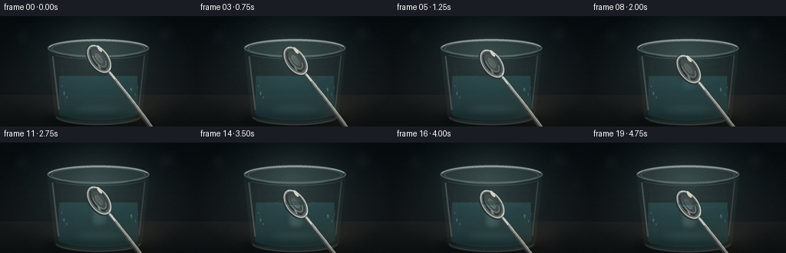
视觉工具实际返回图片 2
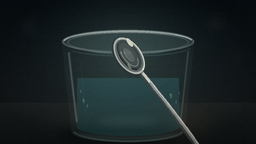
视觉工具实际返回图片 3
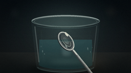
视觉工具实际返回图片 4
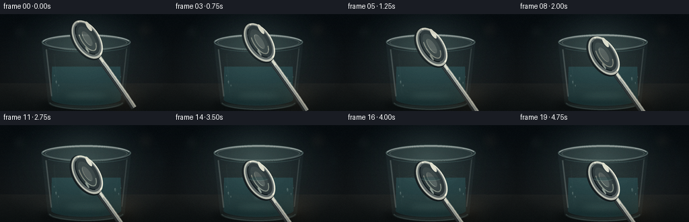
视觉工具实际返回图片 5
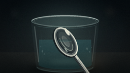
视觉工具实际返回图片 6
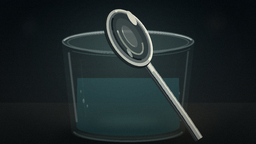
视觉工具实际返回图片 7
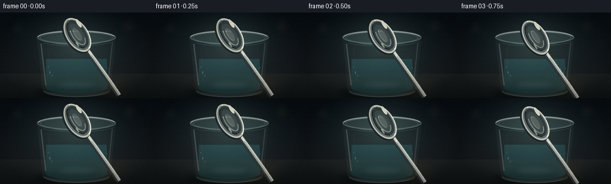
视觉工具实际返回图片 8
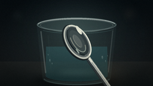
视觉工具实际返回图片 9
视觉工具实际返回图片 10
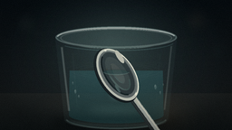
视觉工具实际返回图片 11
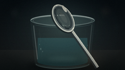
视觉工具实际返回图片 12
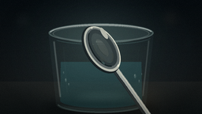
视觉工具实际返回图片 13
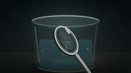
视觉工具实际返回图片 14

视觉工具实际返回图片 15
视觉工具实际返回图片 16

视觉工具实际返回图片 17
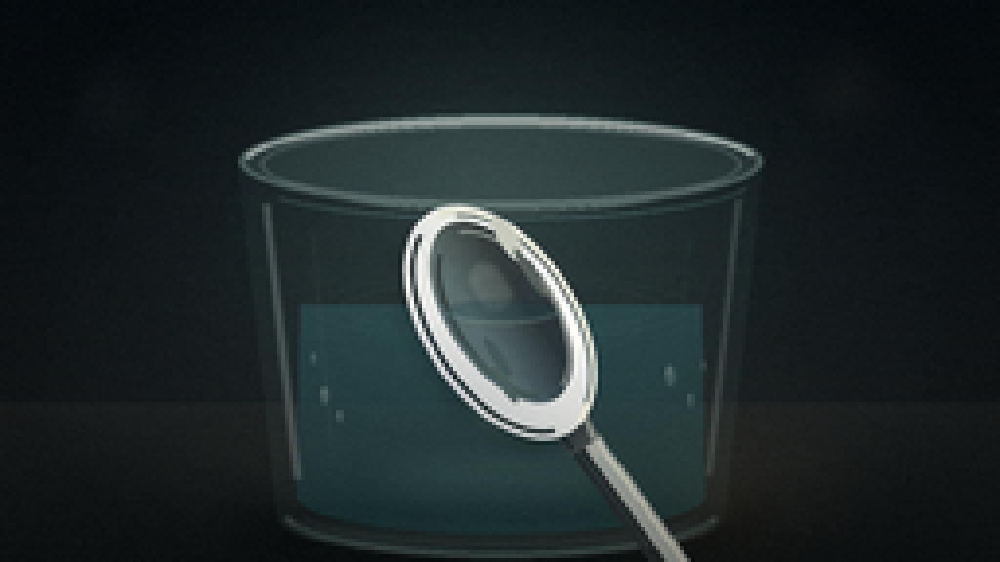
视觉工具实际返回图片 18
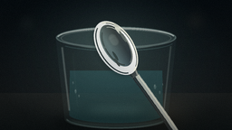
保存候选 6 份；完成命令 17 次；可验证图片返回 18 张。原始 API 响应与完整日志保留在本地。